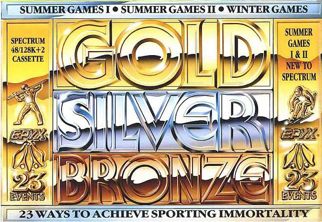
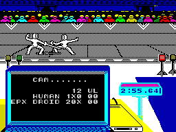
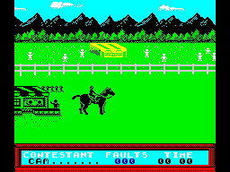
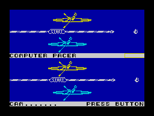
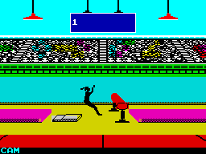

Gold, Silver, Bronze


{kind=link}

| Publisher: | Epyx |
| Price: | £14.99 Cass, 19.99 Disk |
| Year: | 1988 |
| Source: | CRASH, Issue 57 |

Just in time for the Olympics, Epyx have appropriately released Gold, Silver, Bronze, a compilation of the previously released Winter Games (93%, Issue 28), and new to the Spectrum, Summer Games and Summer Games II. This massive, comprehensive sporting package covers a total of 23 events, ranging from the rigours of pole-vaulting to the gracefulness of figure skating.
In Summer Games and Summer Games II, up to eight players can compete in eight events. Each can choose to represent any of 18 countries in the chase for gold medals.

that!
After the obligatory opening ceremony, competitors timber up for that strenuous event, the pole vault. Choose between three types of grip on the fibre glass pole, and your little man strides automatically toward the bar. Split-second timing is needed to plant the pole in the box and flip over the bar while releasing the pole. These three different requirements make for a very difficult (and therefore realistic) event. A similar technique involving timing is used for the high jump on Summer Games II.
Running events include the joystick-waggling 100m dash and the more strategic 4 x 400 metres relay — no waggling here (a good job too, as my arm’s just dropped off!), just control the speed of the runner.

Complex aerial movements and somersaults are involved in diving and vaulting. Both are controlled in a similar manner. The various joystick directions are used to control the speed of rotation as the athlete flies through the air. And careful timing insures you plunge headfirst into the water, or land on your feet.
Back down at the pool, it’s time for some aquatic exertion in the two swimming events. These both involve pressing fire as the swimmer’s arm enters the water to provide power, while pressing left to do one of those ‘show off’ underwater turns to turn round — well he wouldn’t want to smash his head at the end of the pool!
The 100m freestyle has the competitor swimming two lengths of the olympic sized pool, while the relay basically involves the same thing but four times over.

Carpenter?
A less energetic sport is that of skeet shooting — ‘that’s more my scene’, says Nick as he puts his feet up while munching a 9-inch pizza with extra topping!
However, more exhausting events are contained in Summer Games II, including both rowing and kayaking, plus the unusual equestrian event, where you ride a horse, jumping over the fences.
Other excitements in this mammoth compilation are the triple jump, javelin, cycling — with a weird control method of rotating the joystick (if it wasn’t mangled by the previous events!) — and fencing (not the wooden kind, Mark!), where the two opponents face each other on the piste (not down the pub, Dom!).

If this wasn’t enough to wear you out, there are the seven icy events in Winter Games ie, both figure, speed and free skating, ski jumping, hot-dogging (without tomato ketchup), biathlon and bobsled.
Phew! It wears me out even describing all this exercise — I’m more a snooker and darts fan! Seriously though, Gold, Silver, Bronze has an unbelievably large number of events to keep armchair sports buffs happy, contained in a suitably massive box. If this isn’t value for money, I don’t know what is. Worth its weight in gold.
PHIL ... 92%
GOING FOR GOLD
- Practice each event before you play it. You can then work out where to jump, waggle or shoot.
- On the Skeet Shooting it’s best to take your target into the middle of the range and let it fall down onto the skeets. You can get two with one shot if you do this.
- On the Biathlon event, if you just hold down the right key when going up hill instead of pounding away at left and right, you should go up just as well.
- In the Show Jumping slow down the horse as soon as you jump, this stops the rider falling off when they hit the ground.
- Don’t waggle the joystick like mad in the Speed Skating — careful timing is needed to gain speed.
Each of the 23 events is just as challenging and addictive as the last. Particular favourites of mine are the Hot Dog (not the type from the fair!), Pole Vault and Skeet Shooting. The best graphics are to be seen in Winter Games with well-coloured, detailed backgrounds and silhouette-like players, but the graphics are of a good standard all through. As in real-life, the events are difficult to master at first, but once you’ve practised, you can begin to get somewhere and enjoy the compilation. Both Summer Games I and Summer Games II are multi-loads — a problem if you’re using the tape versions — but Winter Games loads half the events at once so you can chop and change without having to break your tape recorder! There are sound effects and tunes in most events except for the winter ones (being made in the 48K-only period). Gold, Silver, Bronze is good quality and great value for money. Buy it and you’ll have hours of fun, guaranteed.
NICK ... 91%
Wow! Be warned: one game of this type on its own is bad for the joystick, three of them are devastating. The 128K version of the game is graphically and sonically identical to the 48K version, but +3 disk owners will have their ears filled with national anthems on the ‘pick your nationality; screen, as well as various jingles throughout the game. Graphically Gold, Silver, Bronze is excellent. Nicely animated, monochromatic sprites energetically leap and bound across the screen in their attempts to win a gold medal. As always the best way to play these sport simulation games is with a couple of friends, but as Phil ‘Carl Lewis’ King keeps beating everyone else in the office, we have had to show him the ‘red card’ (as they say in sporting circles) to stop him playing. Gold, Silver, Bronze is a first rate package that brings together the best of Epyx’s sports games. For me to say that is a miracle.
MARK ... 91%
THE ESSENTIALS
| Joysticks: | Kempston, Sinclair, Cursor |
| Graphics: | Well-animated, monochromatic sprites — especially in Winter Games |
| Sound: | National anthems and a good tune at the start of each event |
| Options: | Up to eight players can compete (four in Winter Games) |
| General rating: | With 23 events Gold, Silver, Bronze has everything any sports fan could wish for. A fun-packed compilation that represents excellent value for money |
| Presentation: | 90% |
| Graphics: | 86% |
| Playability: | 91% |
| Addictive qualities: | 88% |
| Overall: | 91% |